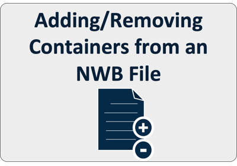
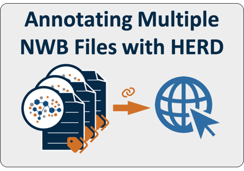
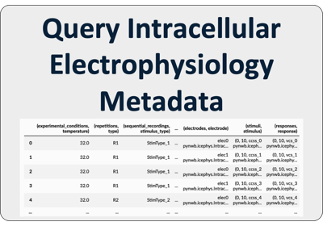
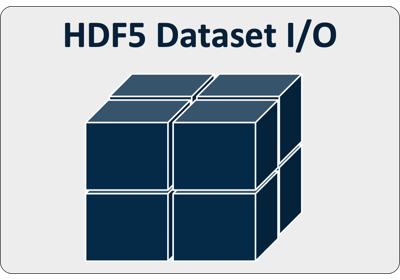

Tutorials
General tutorials

Adding/Removing Containers from an NWB File
Adding/Removing Containers from an NWB File
Linking to External Resources (HERD)
Linking to External Resources (HERD)

Annotating Multiple Streamed NWB Files with a Single HERD
Annotating Multiple Streamed NWB Files with a Single HERD
Domain-specific tutorials

Query Intracellular Electrophysiology Metadata
Query Intracellular Electrophysiology Metadata
Advanced I/O

Defining HDF5 Dataset I/O Settings (chunking, compression, etc.)
Defining HDF5 Dataset I/O Settings (chunking, compression, etc.)